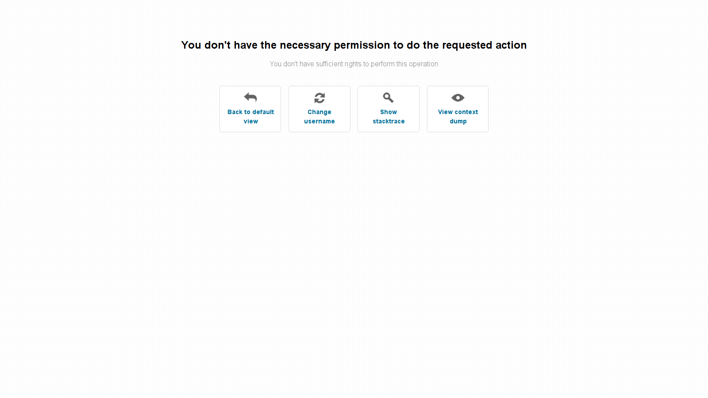
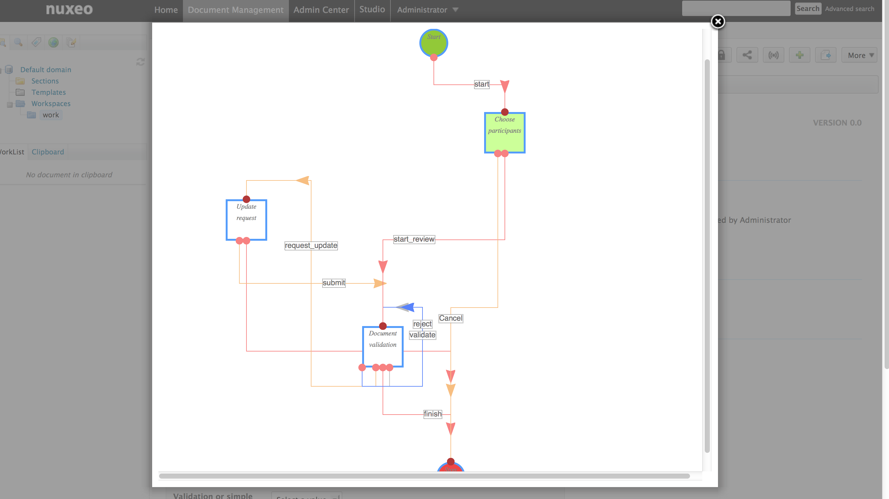

For Users
UI/UX Improvements
Select2 Integration
We have replaced the old selection/suggestion JSF widgets by select2 based widgets. Not only does it look better but it's also easier to customize. You can easily setup a user suggestion widget that filter search query with a group parameter.

We also introduced new suggestion widgets on directories. They support n-level chained vocabularies out of the box.
SessionTimeOut Feedback
Users see a 'session expired' message when their session expires.

Form Submit Shield
This will protect the heavy handed crazy clickers to have errors because they have clicked on the same button fifty times in two seconds. The user will receive a feedback message telling them the request is being processed. It's better for his mouse and the server. This is not activated by default, you need to set the nuxeo.jsf.enableDoubleClickShield property to true in nuxeo.conf.
Tag to Version
When a version of a document is created, the tags on the master document are copied to the new version.
Redesigned Error Page
We have redesigned the legacy error page to have something cleaner, with a user-understandable error message.

Workflow
New Workflow Tab
We have a new workflow tab that lets the user see all his assigned tasks at once and filter them.
Task Reassignement
Workflow tasks can now be reassigned to someone else.

MultiTask Workflow Node
We have introduced a new option that creates a different task per assignee.
Workflow Graph Visualization
The workflow graph can be visualized as it has been created in Studio.
